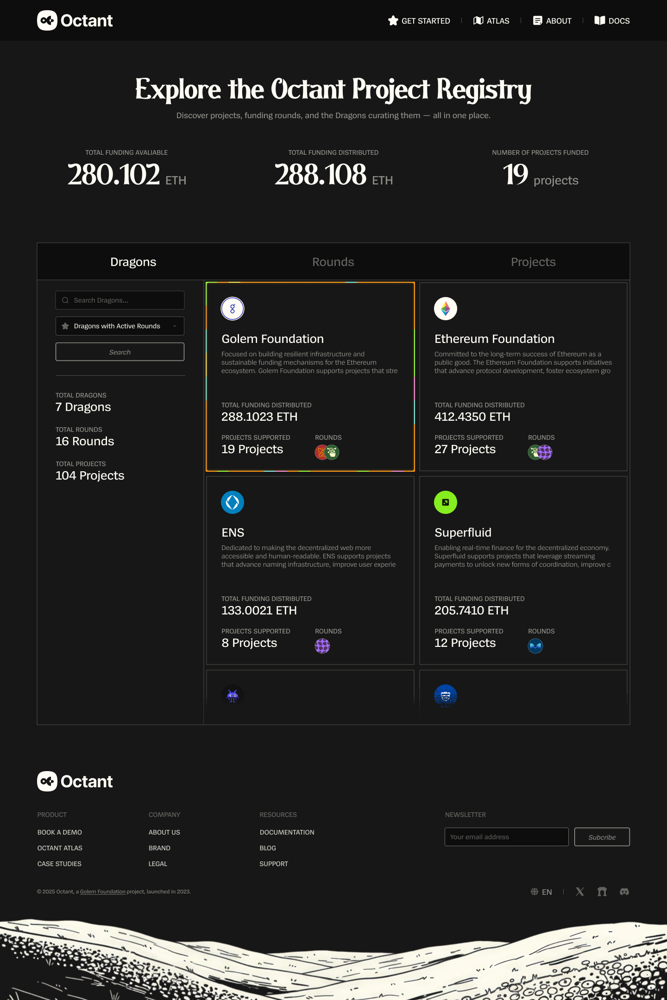
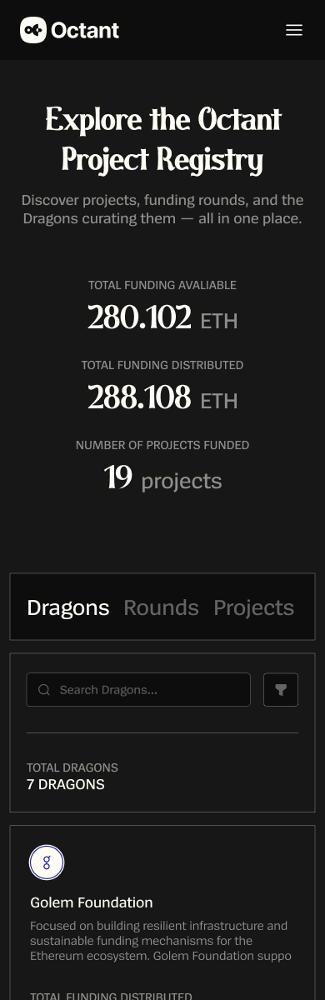
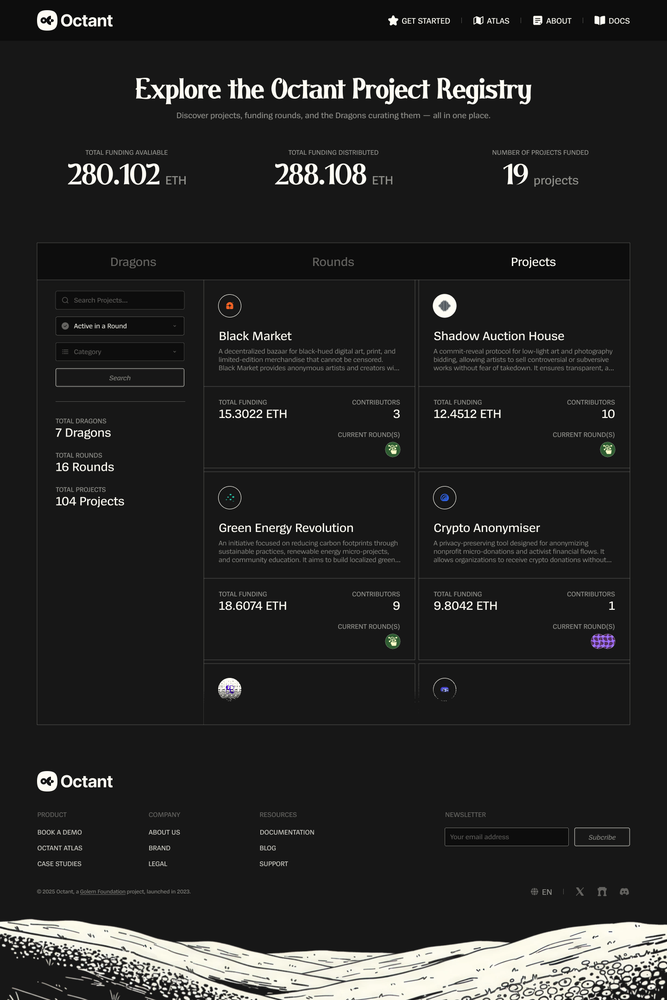
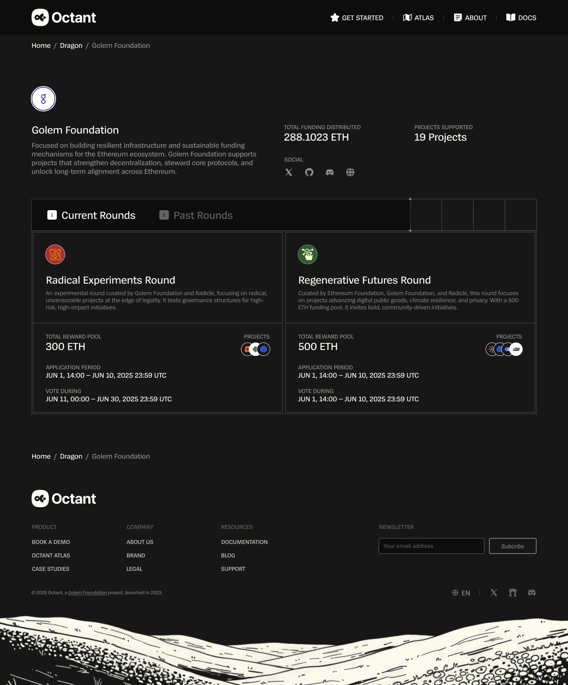
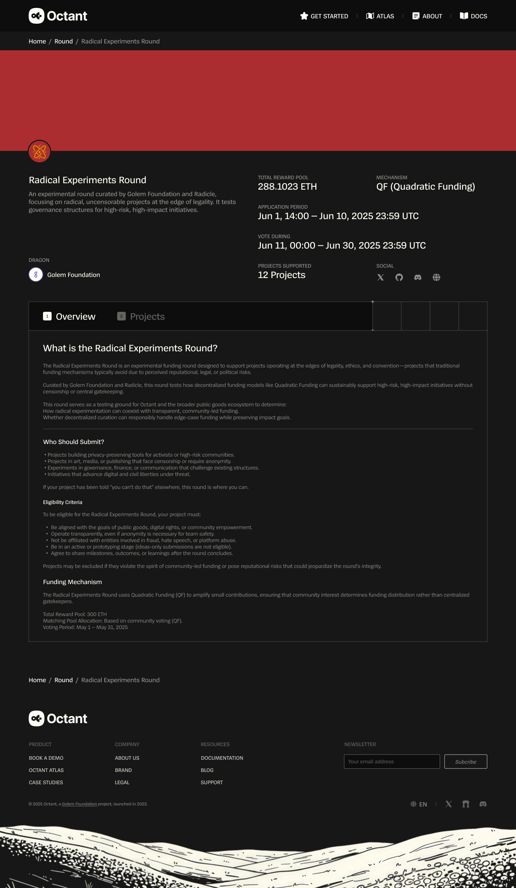
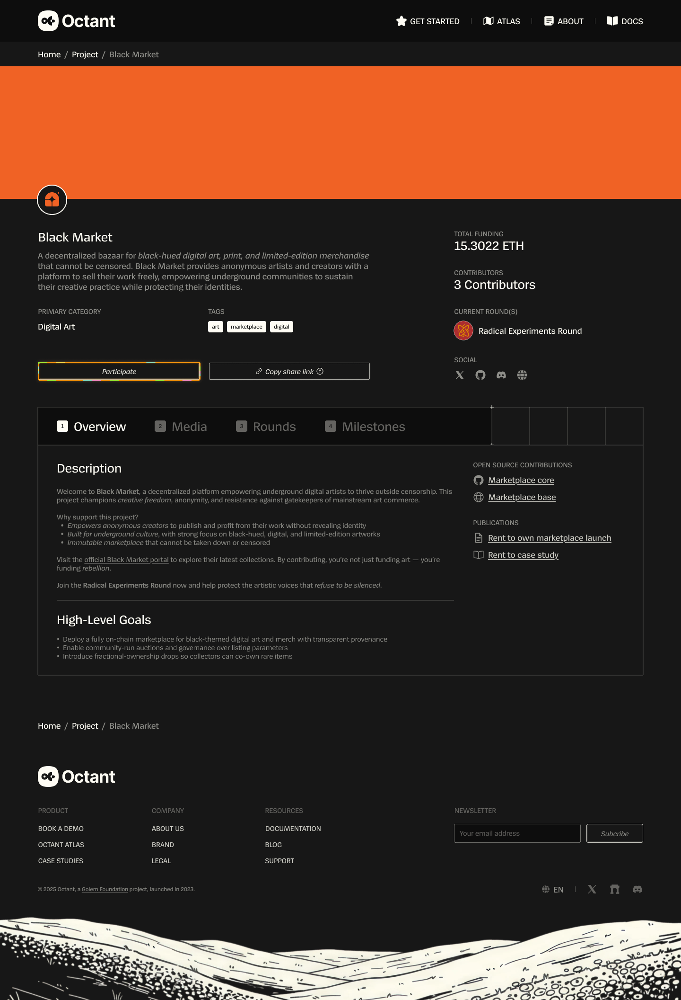
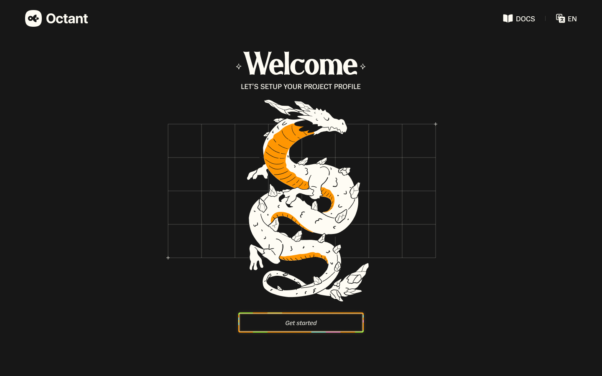
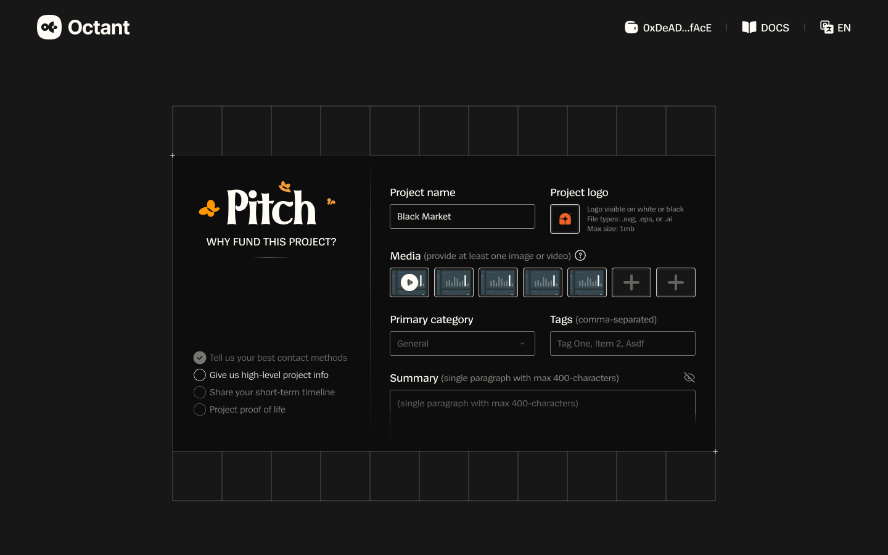
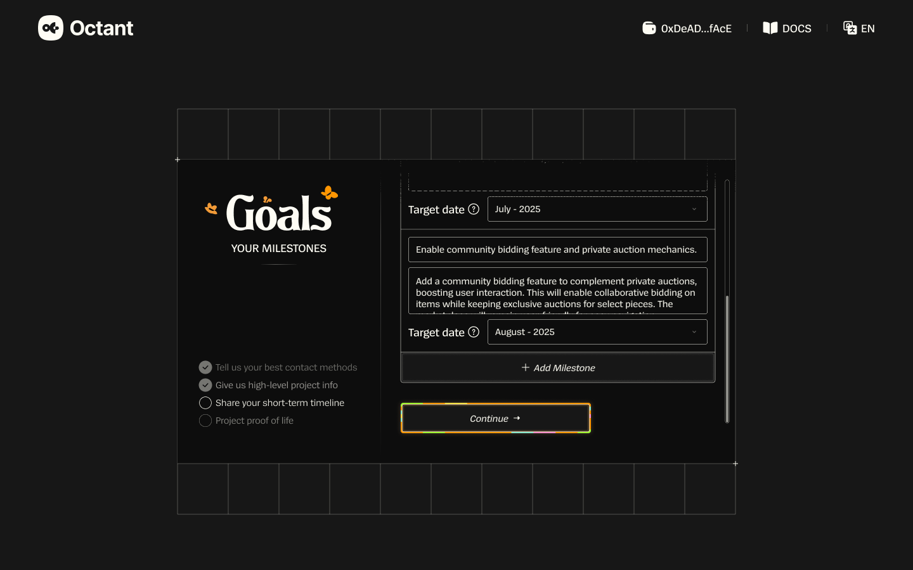
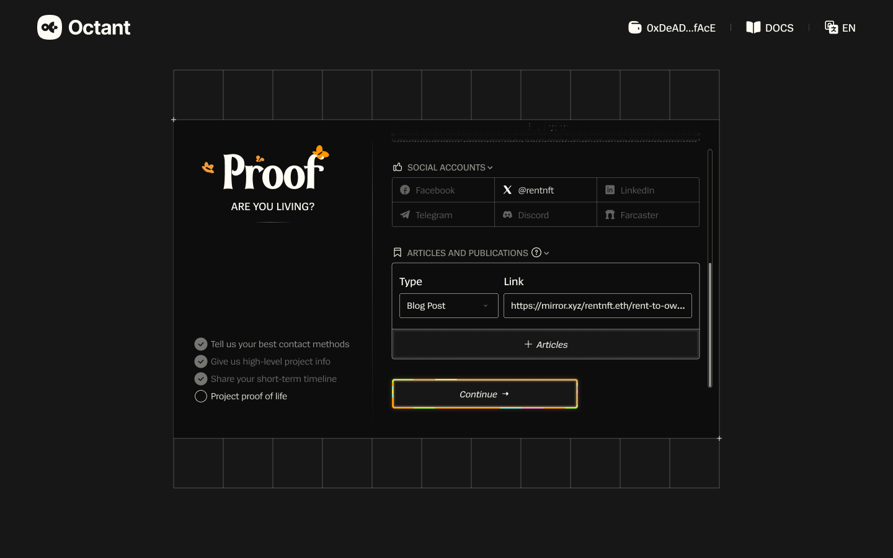

Product design · Public-goods funding · 2026
Octant
A clearer view of projects,
funding, and the people behind them.


01 / The brief
Make the funding ecosystem discoverable.
Octant was working on several products at once and needed additional design support. I joined as a Product Designer to work on its project registry and the screens in the accompanying application flow, using Octant’s existing design system.
The registry brings projects, funding rounds, and the Dragons curating them into one place. Visitors can explore who is funding what, see available and distributed funding, and follow activity across the ecosystem.
02 / Discover
Three ways into the same ecosystem.
Dragons, Rounds, and Projects give visitors different starting points. Funding totals provide an overview; search, filters, and cards let them explore the details.


03 / Explore
From the overview to the details that matter.
A round brings together its funding pool, application dates, voting period, and participating projects. A project profile brings together its purpose, funding, contributors, media, and milestones.


Screens shown are Figma design mockups. Figures in the interface are sample content.
04 / Apply
A project profile, built one step at a time.
The application flow moves from contact details to a pitch, goals, and proof of activity. A persistent checklist shows where the applicant is in the process, while the forms collect the information that will describe their project.




Delivery
Approved and used by Octant.
I delivered the designs using Octant’s established design system. Octant approved the work and used it in the product.
The Figma file includes desktop and mobile screens, alongside search, empty, and validation states.
Open Figma